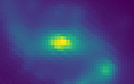

Galaxies in cosmic voids
I study low-mass galaxies located in the emptiest parts of the universe: cosmic voids.
My name is Mithi Alexa (Mia) de los Reyes (she/her/hers).
I'm a Stanford Science Fellow at the Kavli Institute for Particle Astrophysics and Cosmology. As an observational astronomer, I use low-mass galaxies in the nearby universe as tools to answer the question: ``Where did we come from?''
Starting in Fall 2023, I will be an Assistant Professor of Astronomy at Amherst College!
When I'm not doing research, I enjoy rock climbing, doing aerial silks, and eating baked goods.
I use multi-wavelength observations of nearby galaxies to understand how they form and evolve.
Below is a subset of my publication list. You can find a full list here:
ADS
I study low-mass galaxies located in the emptiest parts of the universe: cosmic voids.
I use the chemical abundances of stars in nearby galaxies to learn about the progenitors of Type Ia supernovae.
I try to understand what factors drive star formation in nearby galaxies.
Here are some of the outreach and professional service activities I've participated in. Check out my CV for a more extensive list!
Here are some resources I've put together for people applying to grad school or people interested in improving department climate/admissions policies.
Want me to give a talk or participate in a science outreach event? Have questions about the resources I've posted here? Please feel free to contact me at: mdlreyes at stanford.edu